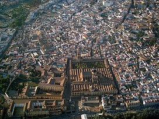
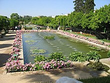
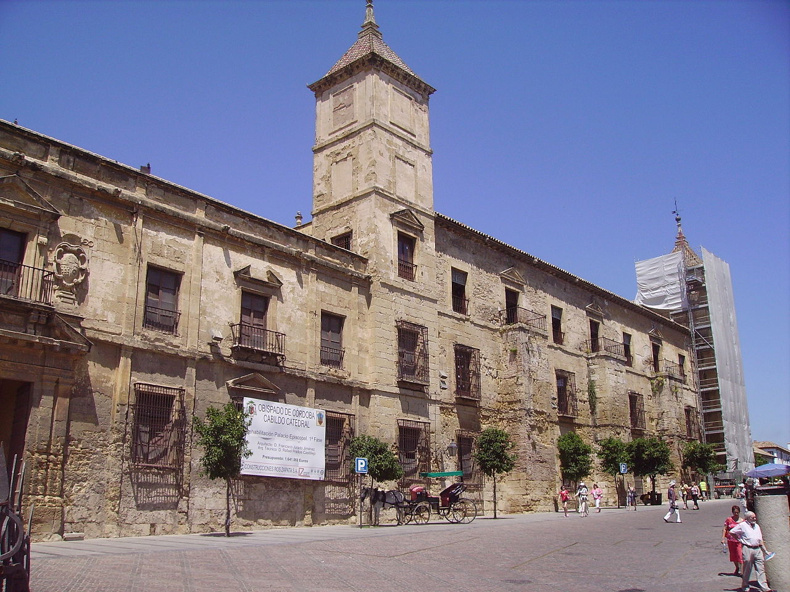

Casco Histórico

El centro histórico de Córdoba es uno de los cascos antiguos más grandes de Europa. En 1984, la Unesco declaró a la mezquita-catedral de Córdoba como Patrimonio de la Humanidad.1 Más tarde, en 1994, la Unesco expandió esta denominación a gran parte del casco antiguo.2 El centro histórico posee una gran riqueza monumental conservando grandes vestigios de la época romana, árabe y cristiana.3
El centro histórico de Córdoba es uno de los cascos antiguos más grandes de Europa. En 1984, la Unesco declaró a la mezquita-catedral de Córdoba como Patrimonio de la Humanidad.1 Más tarde, en 1994, la Unesco expandió esta denominación a gran parte del casco antiguo.2 El centro histórico posee una gran riqueza monumental conservando grandes vestigios de la época romana, árabe y cristiana.3
Estructura urbana

Desde el punto de vista de su estructura urbana, cabe decir que el casco histórico de Córdoba está constituido por dos partes físicamente diferenciadas, que son la Villa o antigua Medina musulmana, al oeste, y la Axerquía o barrio oriental. Esta división es herencia musulmana que se va a perpetuar con el paso de los siglos. Durante el período bajomedieval se dotará de mayor impulso a la zona de la Axerquía, poco poblada en el momento de la conquista cristiana, procediéndose a su ordenamiento en siete parroquias o collaciones.
Desde el punto de vista de su estructura urbana, cabe decir que el casco histórico de Córdoba está constituido por dos partes físicamente diferenciadas, que son la Villa o antigua Medina musulmana, al oeste, y la Axerquía o barrio oriental. Esta división es herencia musulmana que se va a perpetuar con el paso de los siglos. Durante el período bajomedieval se dotará de mayor impulso a la zona de la Axerquía, poco poblada en el momento de la conquista cristiana, procediéndose a su ordenamiento en siete parroquias o collaciones.
Palacio Episcopal

Edificio edificado sobre el antiguo Alcázar Califal y frente a la fachada occidental de la Mezquita-catedral. Desde la conquista cristiana hasta nuestros días ha sido sede del Obispado de Córdoba. A mediados de los años 1980, parte de este complejo se convierte en el Museo Diocesano de Bellas Artes. La primera reforma importante del palacio se realiza en el siglo XV, con una construcción de estilo gótico ojival. En 1745, sufrió un gran incendio que hizo que durante ese siglo y el siguiente, se le añadieron otras dependencias como la fachada en la plaza del Campo de los Santos Mártires del siglo XVII, así como patio del XVIII.
Edificio edificado sobre el antiguo Alcázar Califal y frente a la fachada occidental de la Mezquita-catedral. Desde la conquista cristiana hasta nuestros días ha sido sede del Obispado de Córdoba. A mediados de los años 1980, parte de este complejo se convierte en el Museo Diocesano de Bellas Artes. La primera reforma importante del palacio se realiza en el siglo XV, con una construcción de estilo gótico ojival. En 1745, sufrió un gran incendio que hizo que durante ese siglo y el siguiente, se le añadieron otras dependencias como la fachada en la plaza del Campo de los Santos Mártires del siglo XVII, así como patio del XVIII.